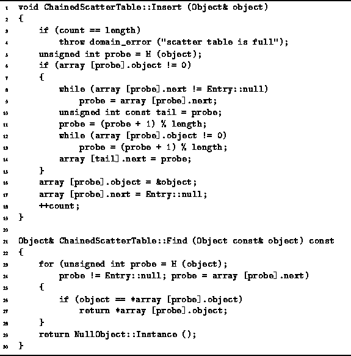
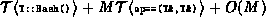

Data Structures and Algorithms
with Object-Oriented Design Patterns in C++
Data Structures and Algorithms
with Object-Oriented Design Patterns in C++
Program  gives the code
for the Insert and Find
member functions of the ChainedScatterTable class.
To insert an item into a chained scatter table
we need to find an unused array location in which to put the item.
We first hash the item to determine the ``natural'' location for that item.
If the natural location is unused,
we store the item there and we are done.
gives the code
for the Insert and Find
member functions of the ChainedScatterTable class.
To insert an item into a chained scatter table
we need to find an unused array location in which to put the item.
We first hash the item to determine the ``natural'' location for that item.
If the natural location is unused,
we store the item there and we are done.

Program: ChainedScatterTable Class Insert and Find Member Function Definitions
However, if the natural position for an item is occupied, then a collision has occurred and an alternate location in which to store that item must be found. When a collision occurs it must be the case that there is a chain emanating from the natural position for the item. The insertion algorithm given always adds items at the end of the chain. Therefore, after a collision has been detected, the end of the chain is found (lines 8-9).
After the end of the chain is found, an unused array position in which to store the item must be found. This is done by a simple, linear search starting from the array position immediately following the end of the chain (lines 11-13). Once an unused position is found, it is linked to the end of the chain (line 14), and the item is stored in the unused position (lines 16-17).
The worst case running time for insertion occurs when the scatter table
has only one unused entry.
I.e., when the number of items in the table is n=M-1,
where M is the table size.
In the worst case,
all of the used array elements are linked into a single chain
of length M-1 and the item to be inserted hashes to the head of the chain.
In this case, it takes O(M) to find the end of the chain.
In the worst case, the end of the chain immediately follows the unused
array position.
Consequently, the linear search for the unused position is also O(M).
Once an unused position has been found,
the actual insertion can be done in constant time.
Therefore, the running time of the insertion operation is
 in the worst case.
in the worst case.
Program also gives the code for the Find
member function which is used to locate a given object in the scatter table.
The algorithm is straightforward.
The item is hashed to find its natural location in the table.
If the item is not found in the natural location but a chain emanates
from that location,
the chain is followed to determine
if that item appears anywhere in the chain.
The worst-case running time occurs when the item for which we are looking is not in the table, the table is completely full, and all of the entries are linked together into a single linked list. In this case, the running time of the Find algorithm is .
 Copyright © 1997 by Bruno R. Preiss, P.Eng. All rights reserved.
Copyright © 1997 by Bruno R. Preiss, P.Eng. All rights reserved.